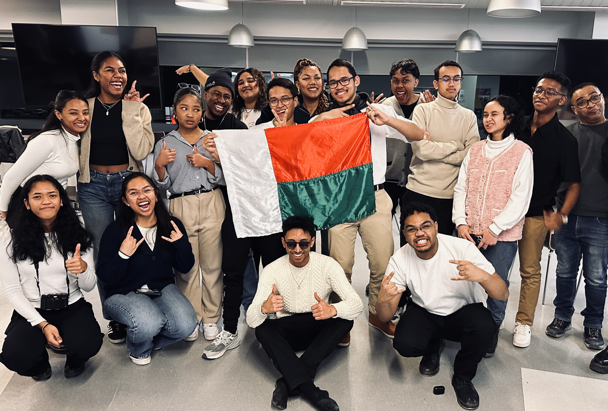

Notre communauté en images



L'AMU est un rassemblement, fondé en Août 2024, qui regroupe principalement des étudiants, de TOUS les cycles, mais aussi de chercheur.e.s et professeur.e.s Malagasy de l'Université de Montréal.
Créée en août 2024, l’AMU est née de la volonté de rassembler les étudiantes, étudiants et membres de la communauté malgache de l’Université de Montréal. Ce projet a commencé avec un petit groupe motivé qui souhaitait créer un espace d’échange, de soutien et de partage culturel. Depuis, l’association grandit et évolue grâce à l’implication de ses membres, tout en gardant la même ambition : bâtir une communauté solidaire, inclusive et fière de ses racines.
Créer un environnement où chaque membre se sent accueilli et soutenu. Nous valorisons la solidarité. l'AMU est un espace d'entraide et d'épanouissement, personnel et académique, de partage culturel et de soutien mutuel pour TOUS, étudiants, de l'UdeM et d'ailleurs, ou non.
